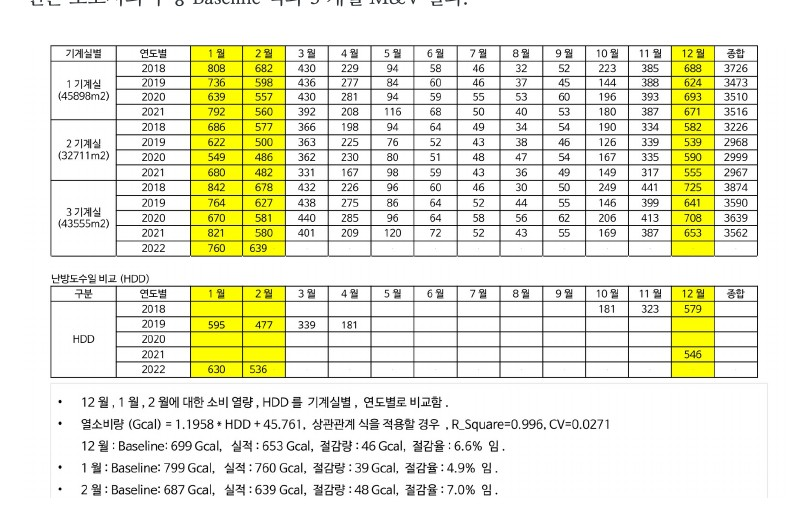
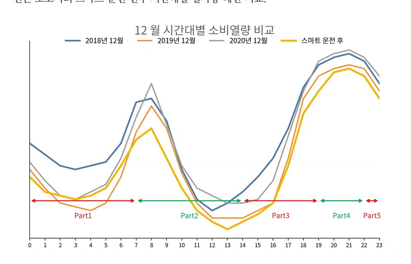

데이터로 찾는 산업·건물 에너지절감 실무 — 105쪽
그림 24-1. 원본 보고서의 수정 Baseline 식과 3 개월 M&V 결과. [S12] 지역난방 스마트운전 성 과분석자료를 비식별 형태로 복원. 그림 24-2. 스마트 운전 전·후 시간대별 열사용 패턴 비교. [S12] 지역난방 스마트운전 성과분석 자료를 비식별 형태로 복원.


인쇄본 기준 p. 105
그림 24-1. 원본 보고서의 수정 Baseline 식과 3 개월 M&V 결과. [S12] 지역난방 스마트운전 성 과분석자료를 비식별 형태로 복원. 그림 24-2. 스마트 운전 전·후 시간대별 열사용 패턴 비교. [S12] 지역난방 스마트운전 성과분석 자료를 비식별 형태로 복원.

